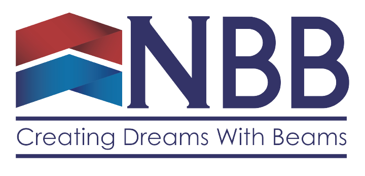

"WE BUILD.WE CONSTRUCT.WE DELIVER.”
Established in 2009, NBB is a Bridge & Building constructer in Malaysia.Initially NBB undertook sub-constructs. As it gained recognition and acknowledgement it has progressed to work in joint venture partnerships and tender for constructs direct.We are fully registered with Malaysian Construction Development Board (CIDB) and Ministry of Finance Malaysia (MOF).NBB is a close-knit team linked to a selected number of subcontractors. We are able to deliver relatively large and technically demanding projects promptly and professionally.At NBB nothing is too small as we have constructed several office and house renovations and nothing is too large or complicated as we have constructed flyovers and bridges at Pan Borneo Highway, Sarawak and SJKT Changlun (Design & Built) and Factories We welcome enquires to any interested clients, main contractor and road/Highway agencies.
Details
Name of company : NBB Holdings Sdn Bhd
Registration No : 1284394-V
Business Address : No A4, Jalan PKNK 3/7,Kawasan Perusahaan Sungai Petani(LPK 3), 08000 Sungai Petani,Kedah Darulaman
Tel : (6)04 4445533
Email : admin@nbbgroup.com.my
Authorized Capital : 501,000.00
Paid Up Capital : 501,000.00
CIDB : G3
MOF Licence : K10132056292394848
Our Bankers : Public Bank Berhad
Maybank Berhad
OCBC Berhad